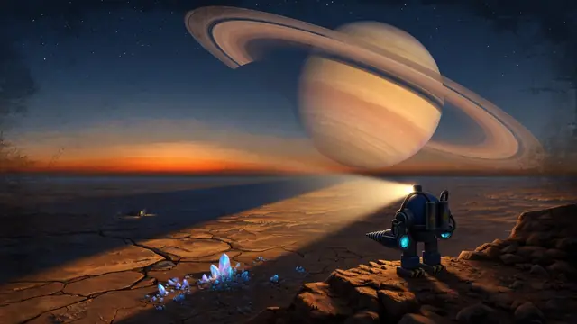
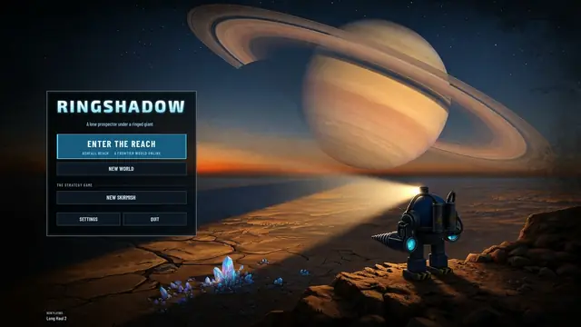
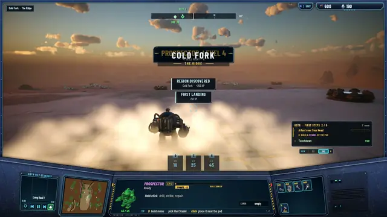
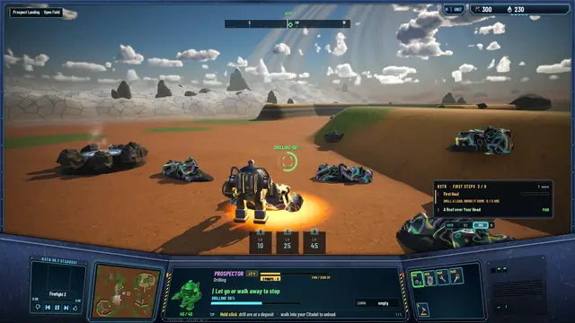
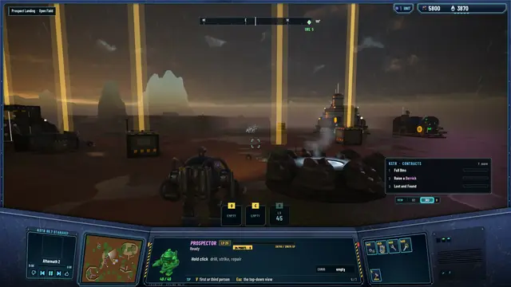
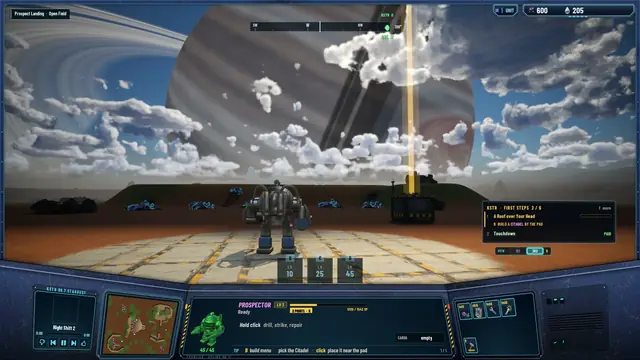
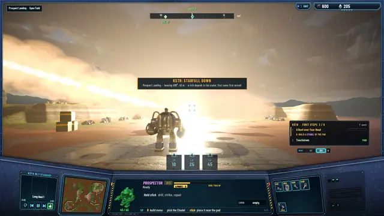
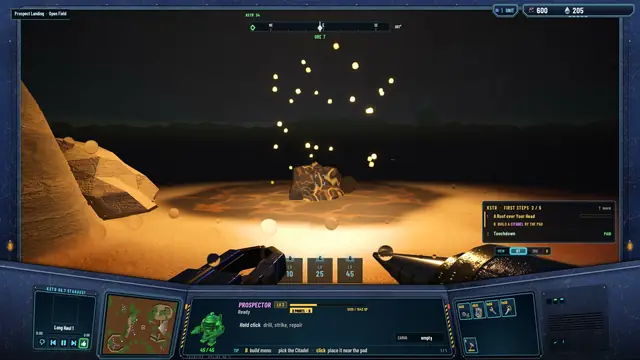
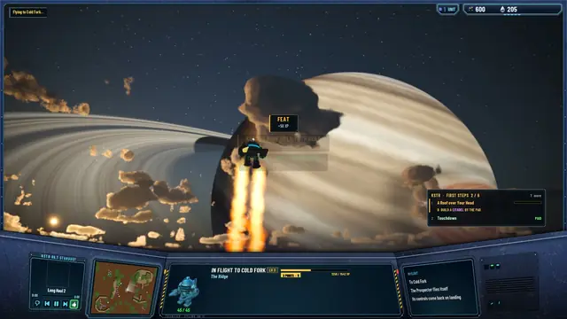

The MMORPG mode · M1 to M7
How we got here
Two days ago Ringshadow's online mode was a list of decisions in a log file. Tonight a pilot lands on a frontier world, drills opal ore under a ringed giant, and watches a meteor come down where the radio said it would. This is how it got built.
Ringshadow started as a real-time strategy game, and that game is still here. On 13 October I decided to build a second way to play next to it: you are one pilot in a world that lasts. You drive the machine yourself, you build with other pilots, and the open ground between the cities is fought over.
The first rule was that single player comes first, on a local server, and that this local server is the very program a public world will run. Only the host changes. So everything below runs through a real server, even when you play alone.
The plumbing: M1 to M5
The agents wrote our own networking on UDP. The server is authoritative and steps the world 60 times a second; it sends each pilot only what is near them, 20 times a second, as differences. The game predicts your Prospector and corrects it, and that was tested under made-up lag, jitter and loss before anything else was built on it.
Then came a world map of three by three regions you drive across or fly between. The server saves the world to SQLite every 5 seconds; the test kills the server with kill -9 and checks that the Citadel and the Prospector are back. The traffic is encrypted (X25519 and XChaCha20-Poly1305, through the public-domain Monocypher library), and the server travels inside the Mac app.
Every screen got checked picture by picture: a shot harness drives the game in hidden runs and saves stills. The first pass took 17 pictures and found 18 problems.
The long road: M6
On the 13th I handed the mode to a manager agent for a week, with one goal: a complete, beautiful game by 20 October. It runs workers in their own copies of the repository and merges what they finish.
M6 gave the Prospector a road worth a hundred hours.
- 100levels
- 65skill nodes in five branches
- 1.1 hto level 10
- 97 hto level 100
The XP curve is 500 + 3L² per level. Buildings come from blueprints you find in the world, each with a level floor. The server owns the world's clock: a day is 40 minutes, 30 of light and 10 of night, and the weather comes from the server too, so every pilot in a world sees the same storm.
A world worth crossing: M7
The game is named after the giant in its sky, so the signature event had to be its shadow. Its rings throw a band of shadow that sweeps across the land on the world clock. Under it the ore veins flare and drilling pays more.
Then starfall: two or three times a world day a meteor streaks in, and its crater holds a deposit about three times richer than the usual one. First come, first served. KSTR 88.7, the frontier's only radio station, now hands out three contracts a day, and a guided opening of six steps walks a new pilot from the landing pad to the first skill point (level 4 at 1,712 XP). Flights burn Metallic Hydrogen: 10 plus 5 for every step across the map.
Not everything went smoothly. Work crashed twice on the 14th, once mid-morning and once mid-afternoon, and every worker was restarted from scratch. Picture runs spent about 85% of their time waiting for the game clock to reach dusk, so an agent added a clock jump for test runs: the starfall run went from 3 minutes 50 seconds to 44 seconds.
At the end of M7 the test suites stood at 454 core tests, 153 server tests and 67 network tests, all passing.
Album · Under the giant

The key art for the home screen, painted with Grok Imagine: a lone Prospector under the giant.
The home screen. ENTER THE REACH comes first.
Touchdown at Cold Fork: region discovered, first landing.
Drilling Stardust Ore at Prospect Landing.
Blueprint sites mark themselves with gold columns at dusk.
The ringshadow: the rings' shadow crossing the land.
KSTR: STARFALL DOWN. A rich deposit in the crater.
The crater at night, the deposit still molten.
A dusk lift-off, burning Metallic Hydrogen.


The next post is about what I asked for after playing it myself, up to level 10: the realm.